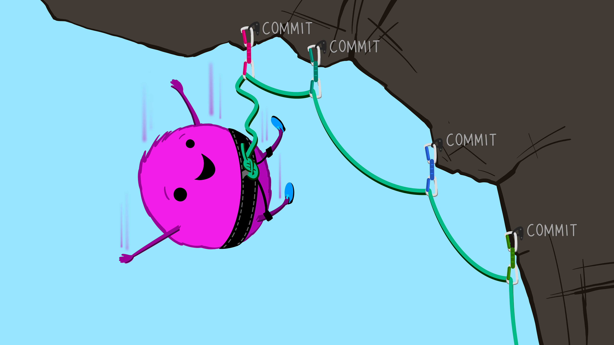
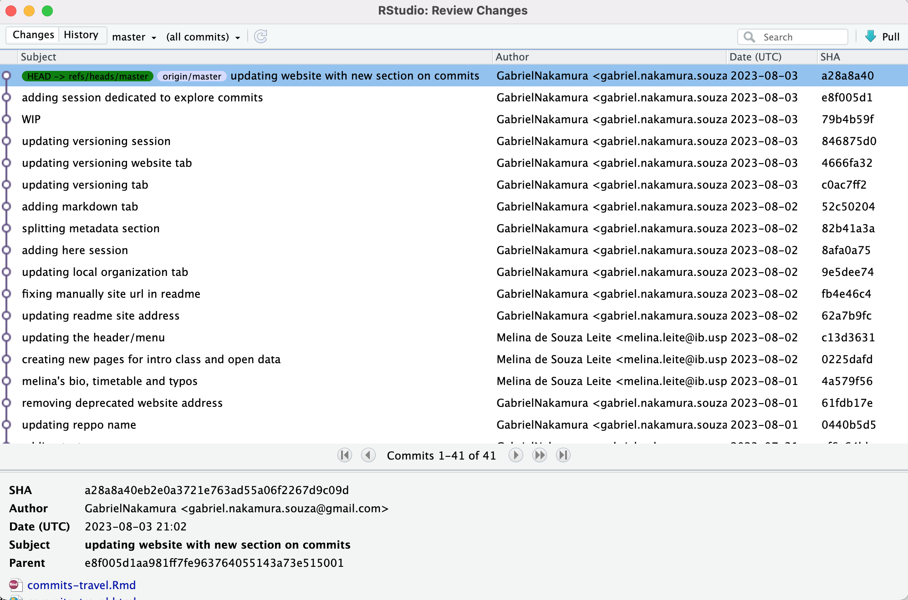
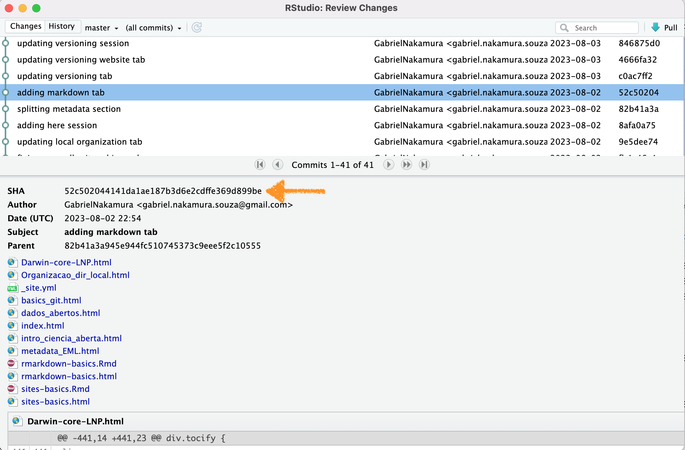
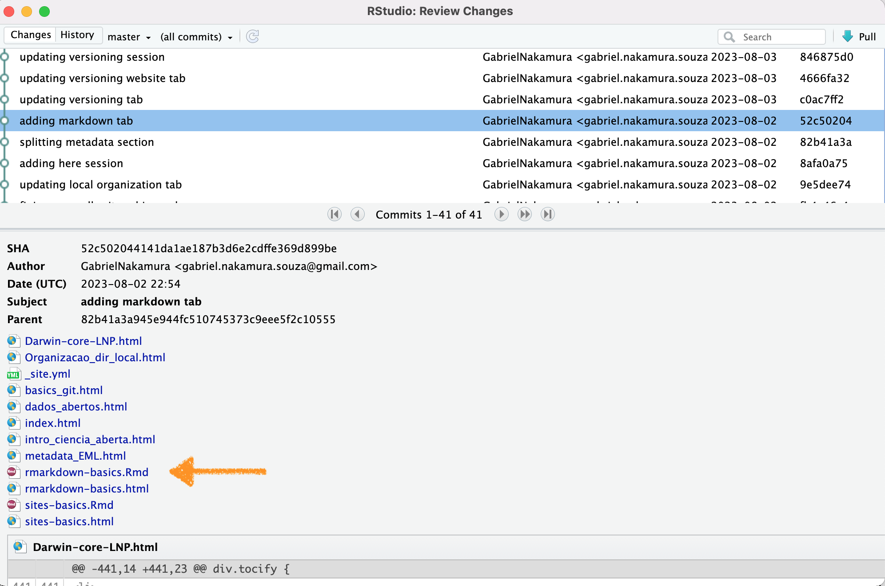
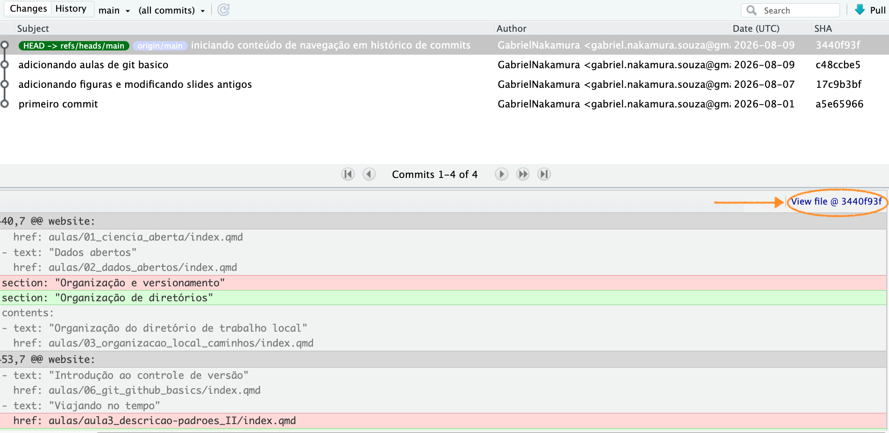

Viajando no tempo
Histórico de versões
Apresentação
Nesta seção iremos explorar um pouco mais o poder que os commits nos oferecem, incluindo boas práticas para fazer commits nos nossos arquivos e como “viajar” entre commits passados. Este momento também servirá para ficarmos um pouco mais familiarizados com o uso do Git através do terminal. Vamos utilizar o teminal visto que algumas coisas que faremos aqui não podem ser feitas através do RStudio.
Sempre ao fazer commits vale lembrar dessas palavras:
Os commits podem ser pensados como sendo fotografias tiradas do seu repositório em diferentes momentos do tempo. Essas fotografias contém não só o estado do seu repositório naquele momento, mas também uma série de informações adicionais como o autor do commit, o dia e a hora que ele foi realizado, entre outros. Os commits são uma ferramenta poderosa para que possamos navegar no processo de estruturação do nosso repositório e do nosso projeto ao longo do tempo
Outra forma de entender a utilidade dos commits é através de pontos de segurança do desenvolvimento do seu projeto, de modo que, se algo que não é desejado acontece os commits podem funcionar como pontos de ancoragem do seu trabalho, de modo que você sempre pode voltar para algum ponto de maneira segura.

Workflow para os commits
Em primeiro lugar sempre cheque se está tudo certo com seu repositório, se seu trabalho local está sincronizado com seu trabalho remoto. Para tanto pode digitar na linha de comando do terminal
git statusSe sua working tree estiver no status clean, quer dizer que você está sincronizada com o origin
Faça algumas modificações e depois vamos fazer a mesma sequencia de ações que fizemos anteriormente (stage, commit, push), mas agora usando a linha de comando. Para tanto podemos fazer assim
git add .
git commit -m "uma mensagem informativa"
git pushPronto, fizemos a mesma coisa que anteriormente em aulas passadas, mas agora utilizando o terminal :)
Amend
Lembra que muitos commits podem te deixar muito lento na escalada? E poucos commits podem ser pouco informativos caso queira reconstruir o que aconteceu com o repositório? Pois então, existe uma estratégia interessante para realizar commits, chamada de amend
Em um amend nós basicamente adicionamos um commit a um outro já existente. Por exemplo, imagine que fez apenas algumas poucas modificações de código que não necessitam necessariamente de um commit dedicada exclusivamente para tais, você pode fazer o seguinte:
1 - stage o arquivo que modificou
git add path/to/file2 - faça um commit
git commit -m "WIP"Note que coloquei WIP neste commit, por que? WIP é uma sigla usada comumente no versionamento para Working In Progress. Sempre que tiver um commit desse quer dizer que o commit que fez ainda está sendo trabalhado.
Ainda não faça o push. Faça mais algumas modificações, e, digamos que agora fez modificações relevantes no código que merecem um commit dedicado. Mas lembre-se que o último commit é um WIP. O que fazemos agora é um amend ao WIP
3 - faça um amend
git commit --amend -m "Aqui um commit com uma mensagem informativa, como sempre"
git pushPronto, agora temos uma mensagem informativa que foi adicionada ao WIP e não precisamos fazer um push do passo intermediário (WIP), deixando nossa escalada mais rápida
Viajando entre commits
Uma das maiores potencialidades dos commits é a possibilidade que podemos navegar entre commits. Ou seja, podemos navegar entre estados distintos do nosso trabalho a medida que ele é desenvolvido. Podemos checar esse histórico tanto na nossa página do repositório no GitHub quanto usando o RStudio, como mostrado na imagem a seguir

Para tanto você precisa apenas abrir a aba do Git no RStudio, como vimos anteriormente, e clicar em History no canto superior esquerdo da janela de revisões. Tudo o que vemos são todos os commits que foram realizados desde que esse repositório foi formado pela primeira vez.
Elementos importantes do commit
Alguns elementos presentes no commit são importantes. O principal deles é a chave SHA-1. Esta se trata de um identificador único do commit. Com ela podemos viajar entre commits, ou referenciar um dado commit em uma discussão no github. Por exemplo, supondo que estamos trabalhando colaborativamente (como nesse site :)), e eu gostei particularmente mais da versão do site que está há alguns commits atrás. Uma opção é abrir uma Issue (veremos isso mais tarde), e referenciar esse número. Ou simplesmente dizer para meu colaborador “Ei! dê uma olhada no commit número XXXXXX”. Na imagem abaixo está em destaque a chave SHA.

Você pode abrir o arquivo no estado em que ele se encontrava em um dado commit clicando no arquivo modificado naquele commit selecionado. Por exemplo, digamos que eu queira ver o arquivo chamado rmarkdown-basics deste site editado dia 02 de Agosto, só precisamos clicar no arquivo, como mostrado na imagem abaixo:

Note que o histórico mostra apenas as modificações realizadas no arquivo referente ao commit específico, porém não mostra o arquivo naquele momento. Caso você queira visualizar o arquivo completo naquele momento você deve clicar no botão na extrema direita View file @xxxx. Os números e letras após o @ correspondem aos oito primeiros identificadores da chave SHA única de cada commit.

Atividade
Explore um pouco os commits que realizaram. Abra a página do GitHub e também o Review Changes do Rstudio, veja as diferenças, as vantangens e desvantagens de cada uma das abordagens
Throwback Commit
Vamos supor que realizamos um commit errado, e agora queremos voltar ao commit anterior, mas sem perder o trabalho que fizemos nos arquivos. Para isso podemos usar a abordagem anterior, navegando entre os arquivos e selecionando o arquivo que queremos em um determinado estado, substituimos pelo arquivo atual e fazemos um novo commit. Esta opção pode ser a mais segura se estamos começando a mexer no versionamento. Outra opção é explorar as funções do git chamadas reset. As funções reset basicamente move o HEAD do seu diretório para um commit no passado. Esta abordagem pode causar algumas dores de cabeça no início, portanto recomendo usa-lá com cautela. Para mais informações sobre isso dê uma olhada nesse site.)
Inutilidades públicas necessárias
No fim do dia, aprendemos fazer commits apenas para utilizar essa ferramenta aqui. Cole o link de seu repositório contendo alguns commits e veja o que acontece
Slides
Aqui você encontra os slides apresentados em aula sobre esse tópico